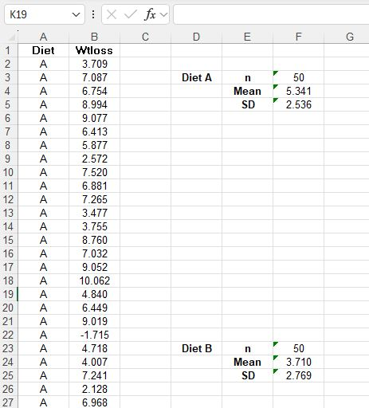
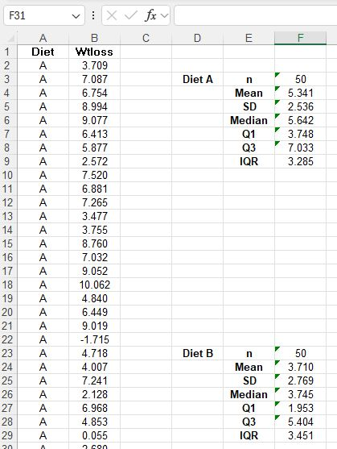
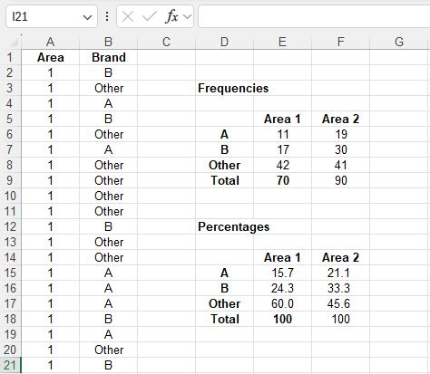
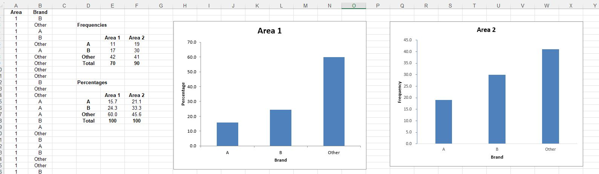
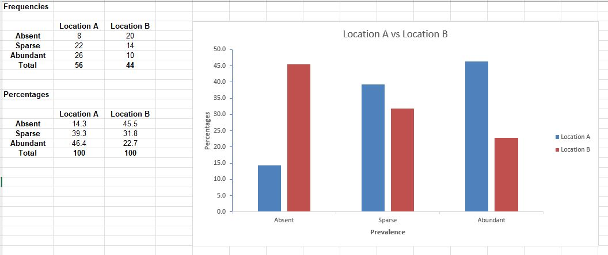
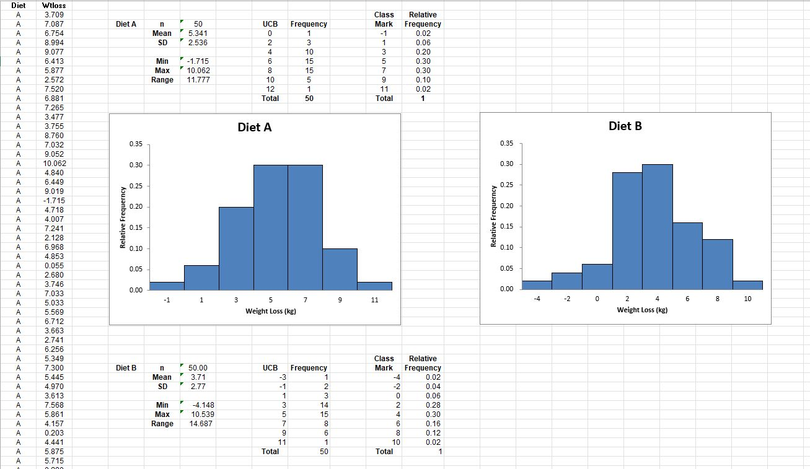

Artefacts - Research Methods and Professional Practice

- Unit 1:
- Reflective Activity 1 – Ethics in Computing in the age of Generative AI
-
Artificial Intelligence (AI) technology has undergone several decades of development, experiencing various periods of fluctuation, and has now progressed to
the stage of Generative AI. Prior to the era of Generative AI, the development and application of AI technology were comparatively limited to industrial
domains. Generative AI has effectively expanded its application territory to the general public. It allows ordinary people to simply utilize AI through
its human-like communication capabilities to generate various outputs, such as multiple media forms. In the past, producing similar artificial outputs
mostly required individuals with relevant industry-specific skills. Now, Generative AI can help the general public obtain their desired outputs simply
through conversation, with almost no barrier to entry. This very situation also raises significant ethical concerns, affecting both developers and users.
Multiple research studies indicate that the ethical issues triggered by AI technology have indeed been occurring within various national societies. Although these research reports often face challenges such as insufficient sample sizes, they are believed to provide substantial and credible indications of real-world problems. Technological development ultimately originates from human needs. Consequently, the ethical perspective of developers will inevitably, and to some degree, influences their products. This is particularly critical because AI possesses Machine Learning (ML) capabilities, enabling it to continuously self-learn, make decisions, and alter its responses autonomously. If such a system is allowed to develop without constraints, it could ultimately pose disruptive and unsettling impacts on society.
Recently, one can observe a proliferation of Generative AI works in news media, the multimedia industry, and on social channels. Among these are numerous multimedia contents containing pornography, insults, and malicious alterations. This trend currently appears to be continuously increasing. Under such conditions, without the proactive imposition of regulations, it will be difficult to prevent the further occurrence and spread of this phenomenon.
Research reports also highlight that a consensus on universal ethical values exists among different countries. Although these universal ethical values will inevitably have varying degrees of difference due to factors like politics, religion, ethnicity, and culture, the overall direction tends towards creating a healthy AI usage environment across different societies. However, it is important to recognize that this kind of ethical consensus is not absolute or universally binding. The reports mention that principles based on ethical values often involve stakeholders who, enjoying vested interests, frequently abandon ethical principles in the pursuit of greater profit. This fundamental conflict is particularly accentuated and visible within capitalist societies.
Therefore, to foster a positive and responsible environment for using Generative AI, legislation may be a necessary and viable option. Unlike human ethical values, which do not necessarily require embodiment in legal constraints to influence behavior, prevailing social values within a society and indiscernibly generate a natural capacity for behavioral restraint among its people. This form of restraint is a consensus formed by people for the purpose of co-existing within a society and serves as the first defensive wall for social safety. Unfortunately, AI itself does not possess this inherent concept; it remains a tool, albeit a powerful one. Although it equips self-learning capabilities and might potentially evolve to become more human-like in the future, at its current stage, it is merely a product of technology. It does not carry the human sense of guilt or moral responsibility. Its algorithms or judgments derive from massive amounts of data and the specific training of its AI model. Consequently, its outputs or judgment orientations are directly influenced by the perspectives and biases of its developers, subsequently providing oriented and potentially skewed answers. Its responses are characteristically immediate and direct, and they are frequently delivered without any inherent sense of accountability. Several research reports concerning AI also point out that most countries and regions currently lack comprehensive laws specifically targeting AI technology. One of the reasons for this legislative gap may be the concern that overly strict legal restrictions could inhibit industrial development and innovation. After all, the prosperity of a key technology can drive revenue for an entire industry and even enhance a nation's overall economic standing, as exemplified by the potential significant profits from the collaboration between the UK and Nvidia. This economic reality explains why relatively more lenient regulatory guidelines are more commonly applied in various countries compared to formal, binding legislation.
A document from the Hong Kong government illustrates this point, indicating that while promoting industrial development is crucial, it is also essential to progressively update relevant legislation to mitigate the risks of societal problems arising from technological adoption (HKSAR, 2025).
Conclusion:
Generative AI technology has brought considerable convenience to people across various application fields and has also provided expanded space for creativity. Simultaneously, the related problems it triggers, such as issues concerning privacy and intellectual property rights, are constantly emerging. At this present stage, AI technology is still definitively positioned as a tool. Even though it is intensely trained to mimic human-like language communication, it ultimately lacks the fundamental constraints of morality and sensory perception. If conditional limitations are not integrated during its development phase, it will not be possible to effectively control the scope of the problems it may generate. The challenge lies in implementing a comprehensive set of AI-specific regulations that do not negatively impact industrial development yet effectively control social safety risks. Furthermore, these regulations need to be progressively advanced and updated in step with the pace of technological development to achieve a necessary balance between societal benefits and public security. It is believed that this is one of the most critical issues that every country must confront and address in this current Generative AI age.
-
References
Nicholas Kluge Corrêa et al. (2023) Worldwide AI ethics: A review of 200 guidelines and recommendations for AI governance. Available at: https://www.sciencedirect.com/science/article/pii/S2666389923002416 [Accessed 23 August 2025].
British Computer Society (2023) What are ethics in AI?. Available at: https://www.bcs.org/articles-opinion-and-research/what-are-ethics-in-ai/ [Accessed 23 August 2025].
HKSAR (2025) Hong Kong Generative Artificial Intelligence Technical and Application Guideline. Available at: https://www.digitalpolicy.gov.hk/en/our_work/data_governance/policies_standards/ethical_ai_framework/doc/HK_Generative_AI_Technical_and_Application_Guideline_en.pdf [Accessed 23 August 2025].
- Collaborative Learning Discussion 1 - Codes of Ethics and Professional Conduct
Initial Post: -
The case study of “Abusive Workplace Behavior” as provided in the Code of Ethics from ACM has been carefully reviewed. In that case, Max exploited his position as the team’s
technical leader to erupt his team members with verbal and personal attacks. This illustrated that superiors often take advantage of their superiorship to bully
their inferiors verbally and in other forms. In many jurisdictions, it is an offence to publicly insult another or causing reputational damage of another.
Such behaviour also renders the person concerned a negative impression on the others. This is particularly the case in a work environment where interconnections
between colleagues are loose and one’s image could be easily damaged by improper comments made especially from the superior level.
In addition, Max was also alleged to have committed the offence of sex discrimination by deliberately removing the names of his women team members from journal manuscript and blocking their participation for professional events. It was clearly a demonstration of an abuse of power to sexually discriminate women in the workplace. As the attacks came from the upper level, it naturally flowed and affected the values of the group and the society, resulting in more women facing sexual abuses, as is the case in India where the societal position of women is significantly lower.
As a comparison, Max’s behaviours also violated two principles of the BCS Code of Conduct, namely:
1. sexual discrimination against his women subordinate,
2. failure to uphold his duty to relevant authority to carry out his responsibilities professionally.
-
References
British Computer Society (2022) BCS Code of Conduct. Available at: https://www.bcs.org/membership-and-registrations/become-a-member/bcs-code-of-conduct [Accessed 20 August 2025].
ACM (2025) Case Study: Abusive Workplace Behavior. Available at: https://www.acm.org/code-of-ethics/case-studies/abusive-workplace-behavior [Accessed 20 August 2025].
Chahal Academy (2025) Summary Of Status Of Women In Indian Society. Available at: https://chahalacademy.com/status-of-women-in-india#:~:text=Summary%20Of%20Status%20of%20Women,true%20equality%20for%20all%20women. [Accessed 20 August 2025].
- Reflective Activity 1 – Ethics in Computing in the age of Generative AI
- Unit 3:
- Collaborative Learning Discussion 1 - Codes of Ethics and Professional Conduct
Summary Post: -
Thank you to my peers Louis Dodge and Fiqki Azizah's for their constructive responses to my initial post.
I accept and appreciate Louis's feedback in relation to the academic elements that were missing from the post. Incorporating references or documents published by authoritative organizations would indeed promote the credibility and persuasiveness of the content and support my views in greater extent. I also agree that the lack of in-text citations may hinder readability, and adding them appropriately would improve the flow for readers and enhance their reading experience.
However, I cannot fully adopt the suggestion for deeper analysis. Due to length constraints, the article already emphasizes required sections extensively, and redundant or overlapping content has been deliberately removed to maintain focus of the post.
In response to Fiqki Azizah’s contribution, I acknowledge that restructuring the article and adding in-text citations would have improved readability. The analytical sections have also been optimized to be more concise and direct. That said, this approach may blur the distinction between different ethical frameworks, potentially confusing readers when comparing foundational principles.
To conclude, I agree that appropriate in-text citations would enhance readability, referencing authoritative sources would increase persuasiveness, and refining analytical descriptions would improve precision.
- Collaborative Learning Discussion 1 - Codes of Ethics and Professional Conduct
- Unit 4:
- Cybersecurity Threats in IoT in IP Cameras: A Literature Review Outline
- 1. Introduction
- 2. Cybersecurity Threats to IP Cameras
2.1 Device level
2.2 Network level
2.3 Society level - 3. Real-World Implications and Case Studies
- 4. Mitigation Strategies
- 5. Conclusion
- Unit 5:
- Reflective Activity 2 - Case Study: Inappropriate Use of Surveys
-
As one of the most popular free social media platforms at the time, Facebook's greatest asset was its user data. Cambridge Analytica,
targeting Facebook's vast audience and its targeted data, exploited design flaws in the platform to quickly obtain user data from its
users. They then analyzed the data and sold it to targeted clients in various sectors.
Most media industries are primarily public-facing, and the amount of user data they collect is often substantial and market-focused. This often serves as a valuable source of research data for market research companies. However, the commercial practice of selling user data is only becoming more prevalent. Users should be aware of this and refrain from easily agreeing to share their data.
- Unit 6:
- Summary Measures
- Exercise 6.1
· Diet A resulted in greater weight loss than Diet B.
· The variability in SD is similar for both diets - Exercise 6.2
· Diet A shows a higher average weight loss than Diet B.
· The medians also reflect this difference, with Diet A’s median weight loss being noticeably higher.
· The variability (SD and IQR) is similar for both diets.
· One negative value appears in each group, but Diet A still maintains a higher overall performance.
- Exercise 6.3
· Brand B is more popular than Brand A in Area 2.
· The combined popularity of the two brands in Area 2 exceeds that of other brands.
- Unit 7:
- Unit 8:
- Cybersecurity Threats in IoT in IP Cameras: Research Proposal Outline
The Significance
- Review IP cameras inherent flaws
- Assess defense ability
- Promote and educate users about challenges
- Provide option for compensation or mitigation
- Encourage manufacturers to upgrade products
The Research Question Set
- Are the IP cameras available for purchase in the present consumer market equipped with sufficient protection capabilities to guard against common cyber threats?
Objectives
- Identify common IP cameras on market
- Spot the vulnerabilities
- Test resilience level
- Test different enhanced safety measures
- Provide standard safety settings
- Give recommendations
Aim
- assess the security competency
- provide multi-faceted methods
Key Literatures
Methodology
- Search popular IP cameras on market
- Design layered security model
- Scan vulnerabilities
- Intrude the IP cameras
- Test different defense methods
- Compile & analyze data
Ethical Considerations / Risk Assessment
- isolated lab environment
- privacy and data protection
- anonymization
- declaration
Proposed Timeline
- Unit 9:
- Exercise 9.1
· Brand B is more popular than Brand A in Area 2.
· The combined popularity of the two brands in Area 2 exceeds that of other brands. - Exercise 9.2
· There are more heathers at location A than at location B.
- Exercise 9.3

- Exercise 9.1
- Unit 10:
- Research Proposal Presentation
- Unit 11:
- Going Forward: Professional Development and Your e-Portfolio
- Unit 12:
- End of Module Assignment